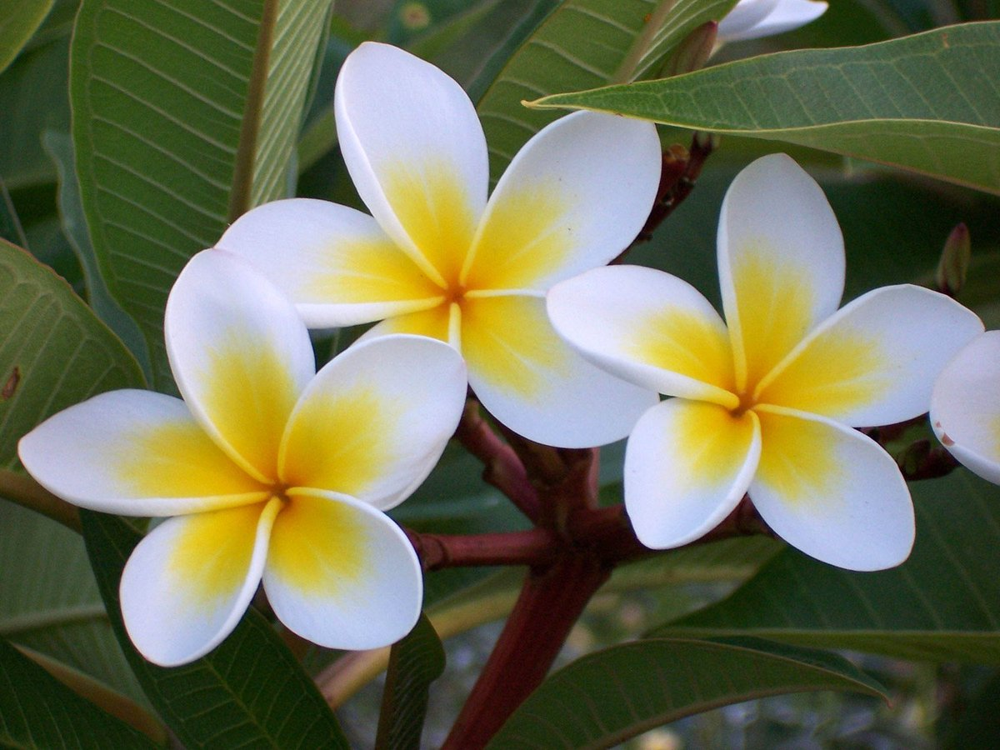

Sacuanjoche
Plumeria rubra


Descripción
El Sacuanjoche es la flor nacional de Nicaragua. Sus delicadas flores blancas con centro amarillo desprenden un aroma dulce e inconfundible que perfuma los jardines nicaragüenses. Esta bella flor crece en árboles pequeños y arbustos que pueden alcanzar hasta 8 metros de altura.
El nombre "Sacuanjoche" proviene del náhuatl y significa "flor amarilla preciosa". Es un símbolo profundamente arraigado en la cultura nicaragüense.
Datos Curiosos
- Declarada flor nacional de Nicaragua el 17 de agosto de 1971
- Su aroma es más intenso durante la noche para atraer pollinizadores
- Las flores caídas se usan tradicionalmente para adornar altares religiosos
- El árbol pierde sus hojas en época seca pero sigue floreciendo
- En la cultura nicaragüense simboliza pureza y belleza
Beneficios y Usos
- Ornamental: Muy cultivada en parques y jardines nicaragüenses
- Aromática: Sus flores se usan en perfumería artesanal
- Cultural: Protagonista en celebraciones y fiestas tradicionales
- Medicinal: En la medicina tradicional se usa para tratar fiebres
- Turística: Atractivo natural en rutas ecoturísticas